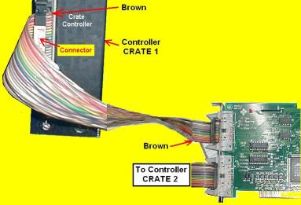

HARDWARE INSTALLATION
Hardware Installation
1. Switch off power to PC and CAMAC crate(s).
2. Insert PCI card in an empty slot in the PC.
3. Insert crate controller(s) CC9/CC2000 in station 24-25 of the CAMAC crate(s).
4. CRATE 1: Connect the 20-pin twisted pair cable from controller to PCI card upper connector
(i.e. the connector away from the card edge that mates with the PCI bus).
5. For a two crate system, connect CRATE 2 similarly to the second connector of the PCI card.
6. Sometimes the cable connectors do not have a notch. In this case refer to the picture
below:

Connecting Controller to Card
7. If the connection is wrong, the system will not work, but there is no harm done.
Just check the connections again.
Back to Installation Page